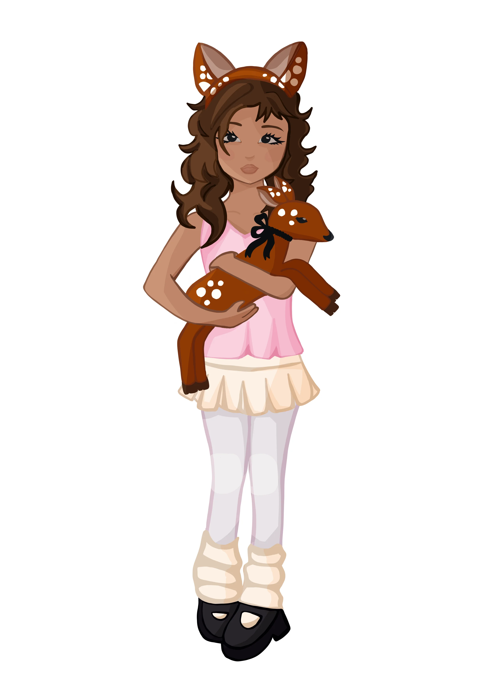
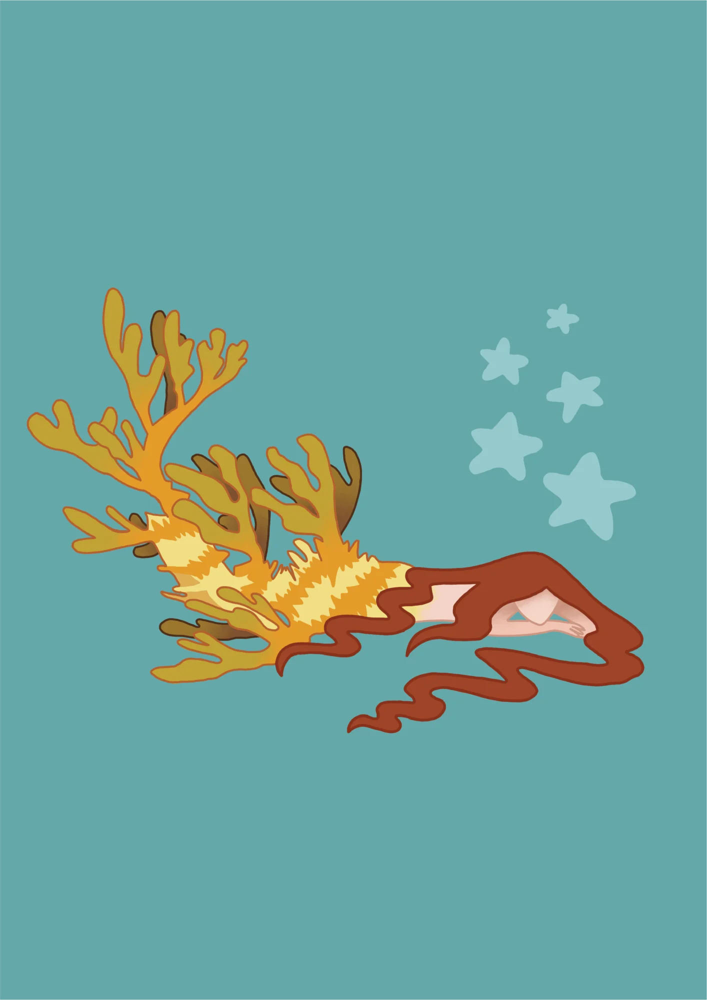
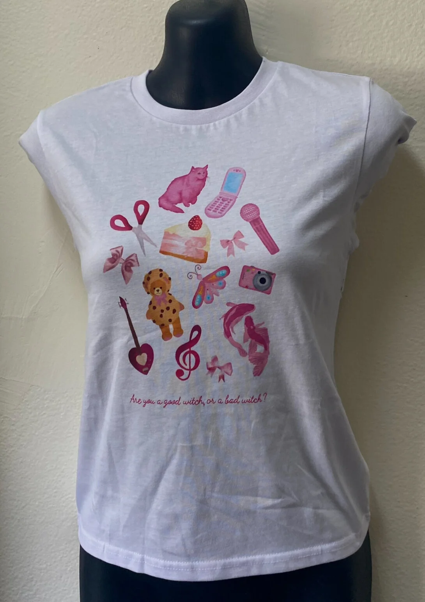
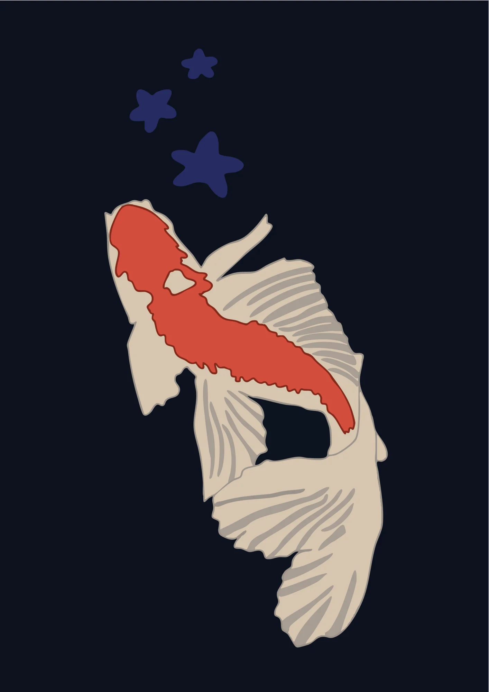
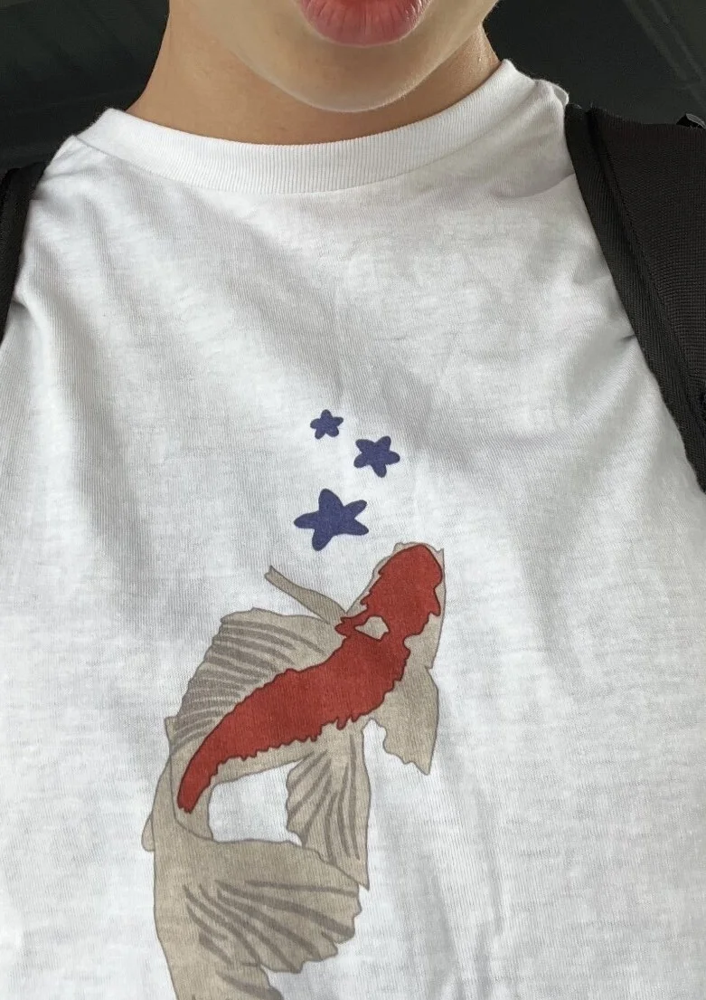
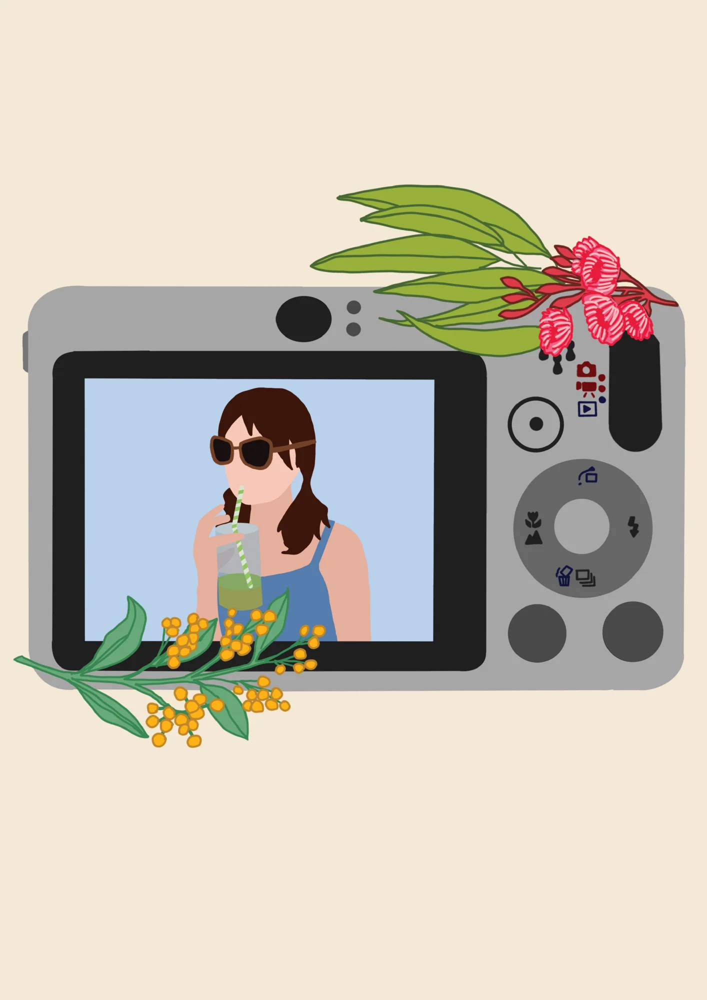

( 01 )
Illustration
2025




( 02 )
Orchid Illustrations
2026


( 03 )
T-Shirt Designs
2024




( 04 )
Digital Camera Series
2025
"Summer Through a Lens"


( 05 )
Trace Designs
2026


( 06 )
Icon Collection